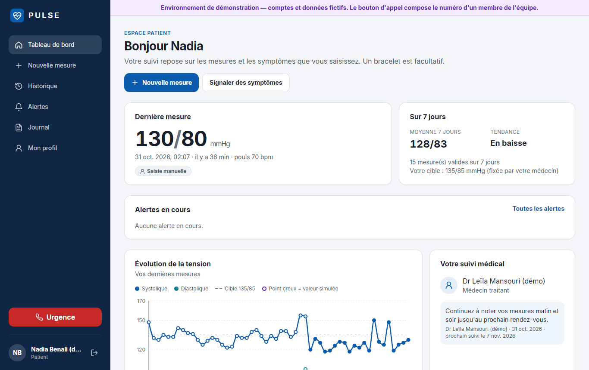
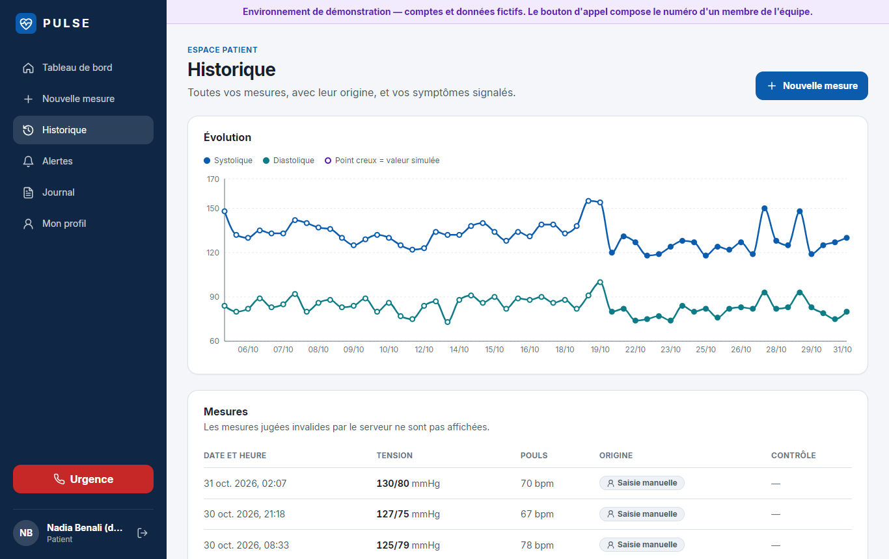
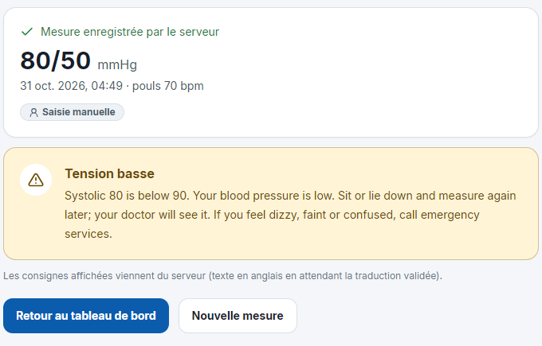
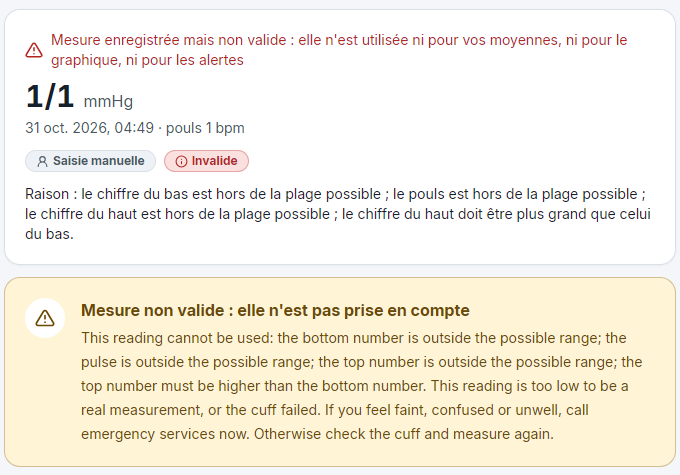
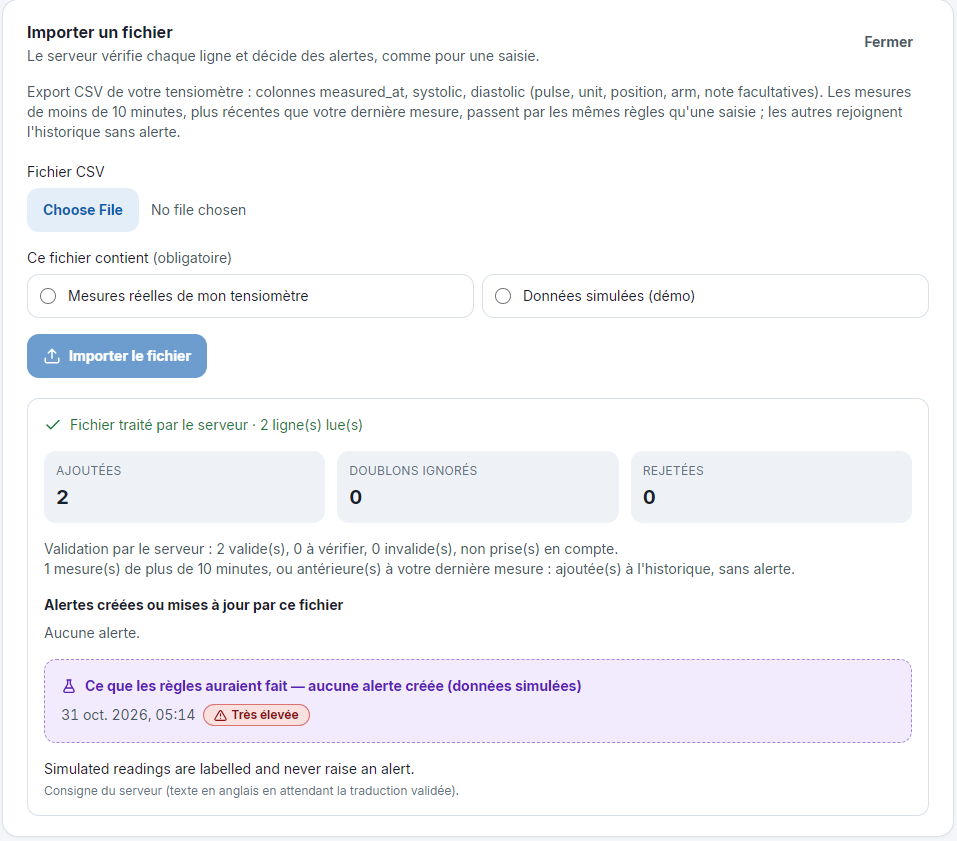
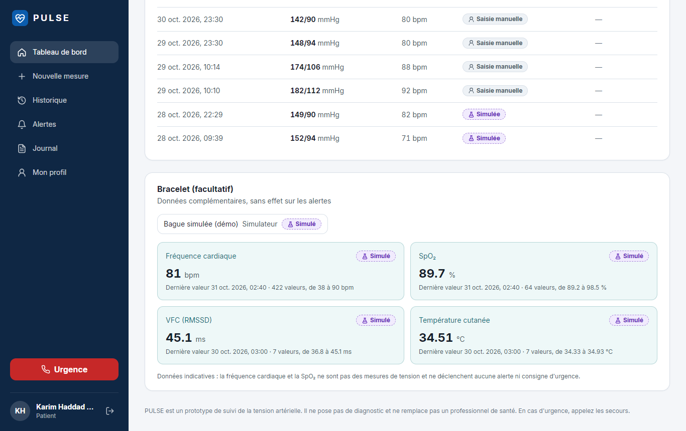
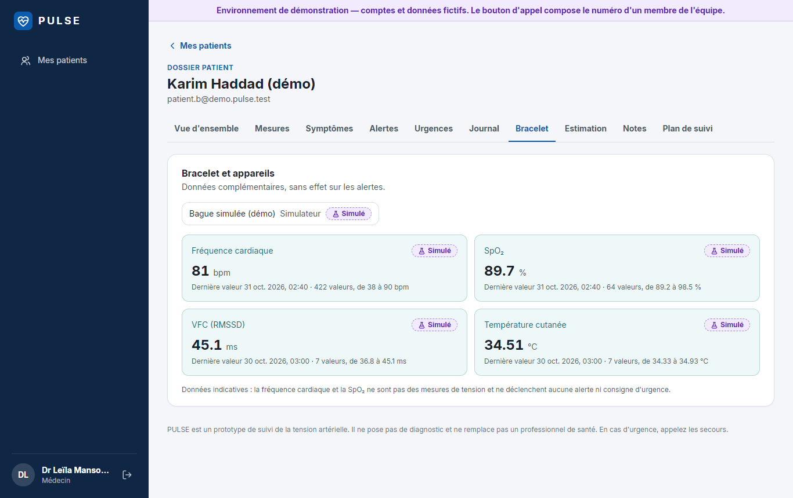
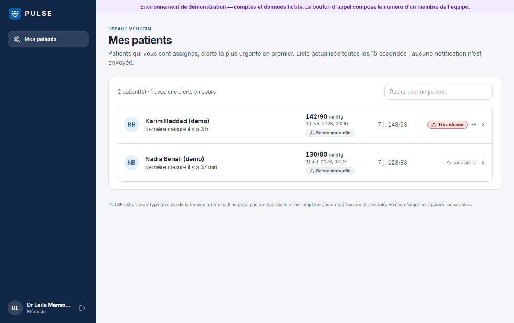
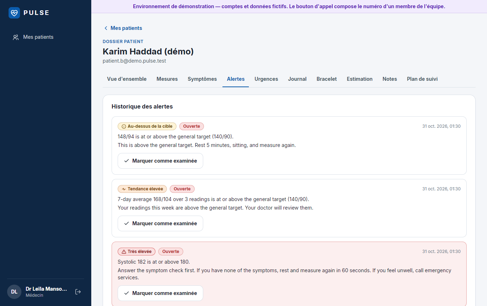
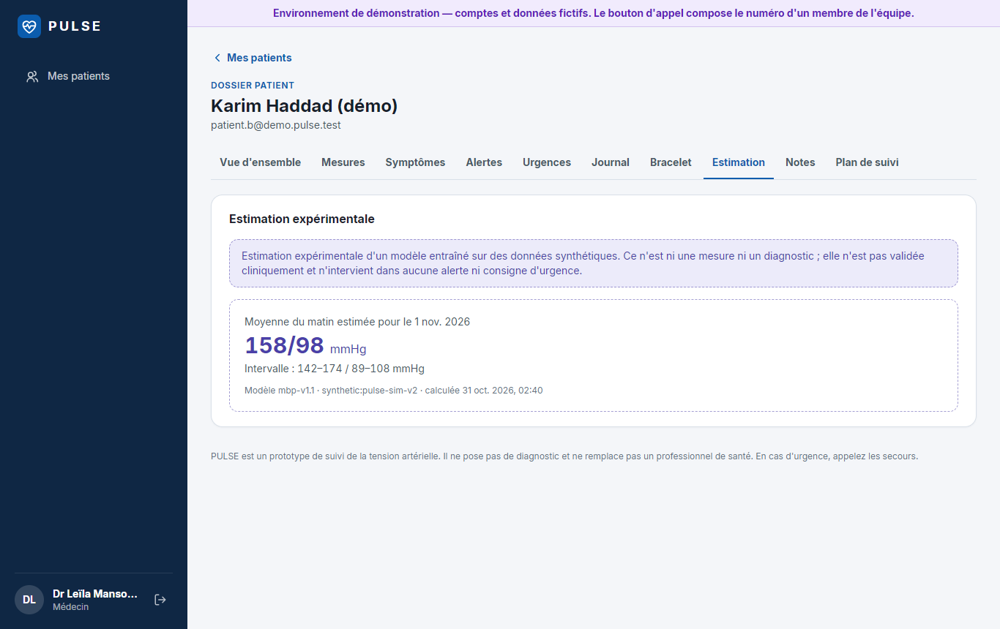

31 October 2026 · Data/AI workstream · Everything runs on this laptop (no internet needed, the cloud is never touched).
All data shown is fictional and labelled Simulé / Simulée: there is no real ring yet, so ring data comes from CSV files and a live simulator.
1. The story in one minute
Who
What it shows
Login
Nadia, no ring
The app works fully with a blood-pressure cuff only: readings, history (including an imported cuff file), alerts and the emergency screen.
patient.a@demo.pulse.test
Karim, with a ring
Ring data (heart rate, HRV, SpO₂, skin temperature) imported from a ring export file, then live values arriving every 5 s.
patient.b@demo.pulse.test
Dr Leïla Mansouri
Both patients side by side: readings, alerts, emergencies, ring tab, the AI estimate, notes and the care plan.
medecin@demo.pulse.test
Passwords: open .dev\demo-credentials.txt (local, never in GitHub). Use two browser windows: one for a patient, one for the doctor. Each tab keeps its own login.
Three sentences to repeat: (1) Alerts come from fixed medical rules, never from AI. (2) A ring adds context; it never measures blood pressure here and never triggers an alert. (3) Everything on screen is simulated and labelled; real public data was only used to calibrate and check.
2. Before you present (morning of the presentation)
Docker Desktop is running (whale icon steady). The laptop clock is set automatically (checked 31 Oct).
Open a terminal in C:\Users\Lenovo\Desktop\pulse and start the three parts:
# terminal 1: the local database (if it was stopped)
api\.venv\Scripts\python scripts\dev_stack.py start
# terminal 1: the API, set to show the AI estimate model and the doctor's ring screens
$env:PULSE_ML_MODEL_VERSION = "mbp-v1.1"; $env:PULSE_SERVE_RING_ML = "1"; api\.venv\Scripts\python scripts\dev_api.py
# terminal 2: the website, then open http://localhost:5173
cd frontend; npm run dev
In terminal 3, point the data tools at the website's database (this reads the local password without showing it):
Prepare today's data (about 1 minute). Re-running is safe: nothing is ever duplicated.
# fresh demo files ending yesterday (data\demo\, git-ignored, labelled SIMULATED)
.venv\Scripts\python -m pulse_data.simulate demo-csv
# Karim's ring export: 28 nights of heart rate, HRV, SpO2, skin temperature
.venv\Scripts\python -m pulse_data.ingest import-wearable-csv --patient patient.b@demo.pulse.test --file data\demo\ring_karim_28_nights.csv --source simulated
# Nadia's cuff history from before the app (14 days, labelled simulated)
.venv\Scripts\python -m pulse_data.ingest import-csv --patient patient.a@demo.pulse.test --file data\demo\cuff_nadia_14_days.csv --provenance simulated --method cuff_oscillometric
# the AI estimate for tomorrow morning (doctor's Estimation tab), night flags (Signaux bracelet),
# weekly reports and personal ranges (Rapport hebdo, Plages)
cd ml; ..\.venv\Scripts\python -m pulse_ml.predict --all; ..\.venv\Scripts\python -m pulse_ml.monitor --nights; ..\.venv\Scripts\python -m pulse_ml.weekly; cd ..
Sign in once with each account to check. Zoom the browser to 110–125 % for the projector.
3. The demo, scenario by scenario
Scenario 1: Nadia, a patient without a ring (about 3 min)
DO
Sign in as Nadia. Show the dashboard: last reading, 7-day average and trend, the target 135/85 set by her doctor, the doctor's advice.
SEE
Everything works with the cuff alone. At the bottom, "Bracelet (facultatif)" says no device is connected.

Nadia's dashboard: last reading, 7-day average, trend, care team.
DO
Open Historique. Explain that her cuff history from before PULSE was imported from the cuff's CSV export.
SEE
Imported readings appear as hollow points ("valeur simulée") from 5 to 19 Oct, then her own entries.

History: hollow points are the imported (simulated) cuff file; filled points are readings typed in the app.
DO
Nouvelle mesure: enter 185 / 125, pulse 95. Answer the symptom questions (for example "no symptoms").
SEE
Rule R-SEV-1 (≥ 180 or ≥ 120) opens a severe alert and asks the symptom check first. With no symptom: rest, then a recheck after a 60-second countdown (still ≥ 180/120 → "contact your doctor or seek urgent care"; lower → the alert stays open for the doctor). With a red-flag symptom such as chest pain: "Call emergency services now" and the emergency screen. The alarm starts right after the click (about 1 s) and rings until Nadia confirms the red alert with her password; a recheck still ≥ 180/120 rings again. The Urgence button dials the demo number set for the team, never 14. The guidance text is in English until the clinician-reviewed French version exists.
DO
Nouvelle mesure again: enter 80 / 50, then 1 / 1 / 1 (a typing mistake or a failed cuff).
SEE
80/50: "Tension basse" and a low-pressure alert for the doctor (R-LOW-1, below 90/60; below 70 systolic, R-LOW-2 also asks the symptom check and a recheck). 1/1/1: the symptom check first, then "Mesure non valide" with the reasons in French; the reading is kept but never used for averages, the chart or alerts. The low-pressure rule is new (proposed decision D27) and waits for clinician review.

80/50: low blood pressure is flagged.

1/1/1: invalid, never shown as "all fine".
DO
Import a cuff file in the app. In terminal 3 make today's file, then upload it within about 8 minutes: Historique → Importer un fichier, choose data\demo\cuff_nadia_today.csv, keep Données simulées (démo) (the file declares itself simulated, so "Mesures réelles" is locked).
Every import case (format, errors, ring file, fresh test files) is in docs/data/csv-examples/README.md.
SEE
The server checks every row: counts, rejected rows, and "Ce que les règles auraient fait": the 186/118 from 2 minutes ago would be Très élevée, but simulated data never creates an alert. The 40-minute-old row joins the history. Uploading the same file again: "Ce fichier a déjà été importé".
SAY
"A real cuff export, marked 'Mesures réelles', goes through exactly the same rules as a typed reading: a very high reading from the last 10 minutes opens an alert and asks the symptom check. Older rows go to the history, and if one was very high the app asks to measure now. These alerts come from fixed rules written from public medical guidance. No AI is involved in any alert."

In-app import of today's simulated cuff file: a preview of the rules, no alert.
Scenario 2: Karim, a patient with a ring (about 2 min)
DO
Sign in as Karim (second window). Scroll to Bracelet (facultatif). Show the import command in the terminal (it prints counts only: 1,701 samples added; running it again adds 0). The same ring file can also be imported in the app from this panel.
SEE
Heart rate, SpO₂, HRV and skin temperature tiles: latest value, how many values, the range. Every tile and the ring itself carry the "Simulé" badge.
SAY
"A ring never measures blood pressure here. It adds context for the doctor and never triggers an alert. Blood pressure still comes from the cuff."

Karim's ring panel. The counts refer to the latest 500 values the panel loads.
Scenario 3: live data (about 2 min)
DO
In terminal 3 (with DATABASE_URL set, step 2.3) start the live ring for Karim. Keep his ring panel (or the doctor's "Bracelet" tab) on screen.
Every 5 s a new heart rate and SpO₂ arrive. The panel refreshes itself every 10 s ("Dernière valeur" moves, counts grow). With spo2_dip the SpO₂ drops by about 7 points (to around 89–90 %): still no alert, by design. Other options: no --scenario (normal values) or hr_rise (heart rate up 40).
SAY
"Today the ring is simulated. A real ring would feed the same tables, through a file export or a device link, which is the next step."

The doctor's "Bracelet" tab for Karim during the live stream (SpO₂ dip).
Scenario 3b: the live early warning (start it ~10 minutes before you show it)
DO
Terminal 4 (in ml\, with the same DATABASE_URL): the live engine. Terminal 3: a falling-oxygen night for Karim. Then doctor → Karim → Signaux bracelet (refreshes every 10 s).
The stream first adds 30 minutes of history (the engine needs it), then plays the night 5× faster. About 7–10 minutes in, a "Signal précoce (ML)" appears, before the "Hors référence" flag when the limit is crossed. Every flag is marked "Simulé" because Karim has no real ring. The doctor can confirm or dismiss each flag with a note. Nothing is sent to anyone: no alert, no notification.
SAY
"The model warns a few minutes before the limit, on a simulated night. It is experimental, doctor-only, and never an alert. It was tested only on simulated nights; real use needs real data and clinical review."
Scenario 4: the doctor (about 2 min)
DO
Sign in as the doctor. Show "Mes patients" (refreshes every 15 s). Open Karim: Alertes (his severe reading), Urgences (the recorded emergency episode), Bracelet, then Notes: write an advice note and show it on Karim's side.
SEE
The doctor only sees assigned patients; every value shows its origin (manual, imported, simulated).

Patient list.

Karim's alerts.
Scenario 5: the AI (about 1 min, optional)
DO
Doctor → Karim → Estimation.
SEE
Tomorrow morning's estimated blood pressure with a 90 % range, model mbp-v1.1, clearly labelled experimental, doctor-only, never used by alerts.
SAY
"The model was tested day by day for 30 days on 100 patients it had never seen, and beat simple methods on every day. Those patients are simulated; real accuracy needs real PULSE data." For the ring models and the live early warning, show Signaux bracelet, Rapport hebdo (weekly report; the doctor marks it reviewed) and Plages (personal ranges proposed by the model; the doctor approves or rejects, and a rejection sticks). The presentation PDF (slides 8–10) explains how they were tested.

The Estimation tab (doctor only).
4. What is done, and what is not (say it before someone asks)
Item
Status
A real ring or watch
NO DEVICE Ring data is simulated (CSV + live simulator). The import path is ready for a real export.
Upload button in the app
DONE Cuff and ring files (Historique, and the ring panel). Proposed decision D26, waiting for Ayoub's review.
Alerts on imported readings
DONE Real cuff rows from the last 10 minutes go through the same rules as a typed reading; older rows are history (a very high one asks to measure now). Simulated rows only show a preview. The 10-minute window waits for clinician sign-off.
Low blood pressure
DONE Below 90/60 is flagged; impossible values (1/1) are invalid and ask the symptom check. Proposed decision D27, thresholds and wording wait for clinician review.
Ring data raising alerts
ON PURPOSE Never (team decision D18).
Screens for ring flags, live early warnings, weekly reports, personal ranges
DONE Doctor only, behind a server switch (PULSE_SERVE_RING_ML, off by default); experimental, not clinically reviewed; no notification.
Live warnings in the cloud
FROZEN Kept in the database by Ayoub's decision; the engine stays off until he lifts the freeze.
Likely questions
Is this real patient data? No: fictional and labelled. Real public data (NHANES, a real home-BP series, sleep-lab nights) was used to calibrate the simulator and check the rules.
How would a real ring connect? Its app exports a file (CSV / Health export) that PULSE imports today; next steps are a direct link (Bluetooth from the browser, or the maker's cloud API).
Why doesn't the low SpO₂ raise an alert? Consumer ring readings are not reliable enough to act on alone; they are context for the doctor. Alerts come from blood pressure and symptoms.
5. If something goes wrong
Symptom
Fix
Login fails / "network error"
Docker Desktop off or the stack stopped: api\.venv\Scripts\python scripts\dev_stack.py start, then restart the API (terminal 1).
Page doesn't load
Terminal 2: cd frontend; npm run dev. Use localhost, not 127.0.0.1.
The API was started without PULSE_ML_MODEL_VERSION=mbp-v1.1, or the estimate is from an earlier day: run the predict line again (step 2.4).
Ring panel not moving
Wait 10 s (auto-refresh) or press F5. Check terminal 3: the stream prints its count when it ends.
Doctor tabs "Signaux bracelet", "Rapport hebdo", "Plages" are missing or empty
The API was started without PULSE_SERVE_RING_ML=1 (step 2.2), or the monitor --nights / weekly lines were not run (step 2.4).
Imported file: "Ce que les règles auraient fait" is missing
The newest row is more than 10 minutes old: run demo-csv-today again and upload the new file.
stream says "no simulator device"
Import Karim's ring file first (step 2.4).
import-csv says "refused: already imported"
Normal: the same cuff file is never imported twice (duplicate protection, worth showing).
Start from a clean state
Local only, deletes the local demo data: dev_stack.py down (type yes), dev_stack.py up, scripts\dev_seed.py (new passwords in .dev\demo-credentials.txt), then step 2.4 again.
Never point DATABASE_URL at the cloud: the stream refuses a non-local database, and the cloud is frozen. Tools added for this demo: pulse_data.ingest import-wearable-csv, pulse_data.stream --patient-email, pulse_data.simulate demo-csv (branch feat/data-demo-import); in-app imports, doctor ring screens, low-pressure rule, demo-csv-today (branch feat/demo-complete).